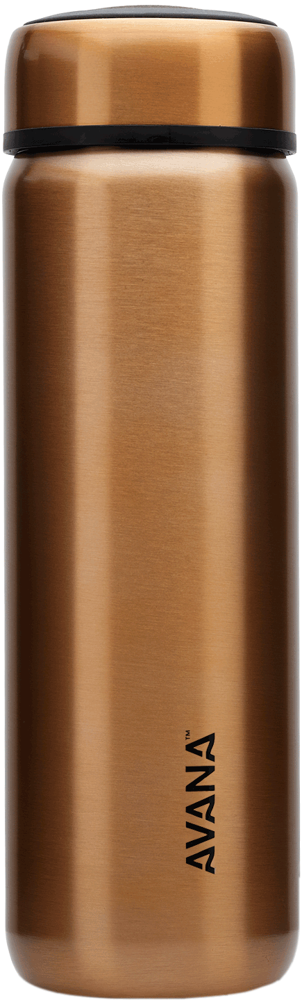

Case Study
-
1. Test Image -

Output On Microsoft Azure - Bottle
Output On MobileNet Model - Water Bottle
Result -
Mobilenet model is more accurate
-
2. Test Image -

Output On Microsoft Azure - Phone
Output On MobileNet Model - Mobile Phone
Result -
Mobilenet model is more accurate
-
2. Test Image -